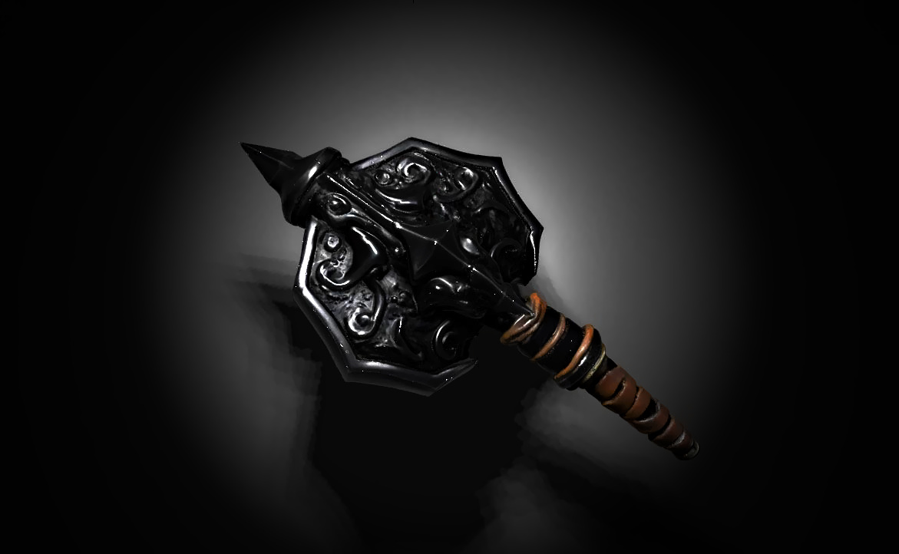

With an 18 on History, Brulgwyn recalls old tales of Lady Vaelora, the Last Light.
She was once a renowned elven healer, known for wielding magic that could purge even the most cursed afflictions. Some believed she was blessed by the gods, while others whispered that her power came from something older than divinity itself.
Long ago, she vanished into the Emerald Vale, a mystical land hidden within an enchanted forest. Few who seek her ever return, and those who do speak of illusions, shifting paths, and unseen watchers that guard her domain. Some say that only the truly desperate—or the truly worthy—can find their way to her sanctuary.
Brulgwyn now understands:
- Lady Vaelora is real, but reaching her is a great challenge.
- The Emerald Vale is heavily enchanted, making it difficult to navigate.
- If she still lives, she may be one of the few capable of breaking the curse.
Now, Brulgwyn must decide:
- Go to Black Hollow—confront the source of the curse head-on and try to destroy the Root of Withering.
- Seek Lady Vaelora—risk the enchanted forest in search of a powerful healer
Brulgwyn nods, determination in his eyes. “I will find Lady Vaelora. If she knows anything about curing this curse, I must seek her out.”
Eldrin inclines his head. “A wise choice, but not an easy one.” He unrolls a faded map, tracing a path leading eastward beyond the mountains. “The Emerald Vale lies past the Silver Rivers, hidden within the heart of the Elderwood. But be warned— the forest does not welcome outsiders. Its paths shift, its trees whisper, and those who enter without purpose may never leave.”
He closes the map and hands it to Brulgwyn. “Travel east through the valley, cross the Silver Rivers, and seek the archway of ancient stone. If the legends are true, the Vale lies beyond. But tread carefully—this is a land of magic, and it does not suffer fools.”
- Gather supplies in town before departing.
- Set off immediately toward the Emerald Vale.
- Ask Eldrin for any magical wards or knowledge that might help navigate the enchanted forest.
Brulgwyn sets off back toward town, his heavy boots thudding against the dirt road. The sun hangs low in the sky, casting long shadows as he nears the bustling market district. Merchants call out their wares, and the scent of roasted meat and fresh bread fills the air
Brulgwyn takes stock of his 206 gold pieces (GP) and considers what he might need for the journey ahead.
Shop available:
- General Store – Offers rations, rope, torches, and other travel essentials.
- Blacksmith – Sells weapons, armor, and repair services.
- Alchemist's Shop – Carries potions and herbal remedies.
- Magic Emporium – Sells enchanted items and trinkets (if Brulgwyn can afford them).
Brulgwyn strides into the blacksmith’s shop, the air thick with the scent of burning coal and hot iron. The rhythmic clang of hammer on metal rings through the forge, where a burly dwarf with a braided beard wipes sweat from his brow.
“Ah, a fellow kin!” the blacksmith grins, setting down his hammer. “Lookin’ to arm yerself proper, eh? Got plenty o’ fine steel here.”
Weapons Available:
- Battleaxe (15 GP) – A sturdy, well-crafted axe with a keen edge.
- Greatsword (50 GP) –A massive two-handed blade, ideal for cleaving foes in half.
- Warhammer (20 GP) – A solid dwarven hammer, perfect for smashing through armor.
- Handaxe (5 GP each) – A lightweight, one-handed throwing axe.
- Dwarven Greataxe (80 GP) – A masterwork weapon, finely balanced and engraved with ancient runes.
The blacksmith eyes Brulgwyn. “Or, if ye got somethin’ that needs fixin’ or reforgin’, I can do that too.”
Brulgwyn currently has 206 GP. What will he purchase, or does he have any weapons he’d like repaired?
The Warhammer deals 1d8 bludgeoning damage when wielded in one hand and 1d10 bludgeoning damage when wielded in two hands (versatile).
It’s great for smashing through armor and is especially effective against skeletons or heavily armored foes! Would Brulgwyn like to purchase it, or does he want to check out other weapons?
The Warhammer costs 20 GP.
If Brulgwyn purchases it, he will have 186 GP remaining. Would you like to proceed with the purchase?
In Dungeons & Dragons, 1 Platinum Piece (PP) = 10 Gold Pieces (GP). So 20 PP = 200 GP, which is far more than the 20 GP cost of the Warhammer.
The blacksmith’s eyes widen as Brulgwyn places 20 Platinum Pieces on the counter. He chuckles, scratching his beard.
“By Moradin’s beard, lad! This hammer’s good, but it ain’t worth a king’s ransom!” He slides back 18 Platinum Pieces and takes just 2 PP (equal to 20 GP).
Brulgwyn now has:
- Warhammer (1d8 / 1d10 Bludgeoning, Versatile)
- Remaining Gold: 18 Platinum (180 GP) + 6 GP
The blacksmith nods in approval. “A fine choice! She’ll serve ye well, dwarf. Anything else ye need?”
Brulgwyn heads over to the general store, a cozy shop filled with all the essentials for travel. Shelves are stacked with dried meats, sacks of grains, bundles of rope, and other adventuring supplies. A middle-aged woman with a friendly smile stands behind the counter.
“Ah, what can I get for you today, sir?” she asks, glancing at Brulgwyn’s battle worn appearance.
Available Supplies:
- Rations (5 SP each) – A 1-day serving of dried meat, bread, and cheese.
- Trail Rations (1 GP each) – Compact rations for longer journeys, lightweight and filling.
- Water Skin (2 GP) – Holds enough water for several days.
- Rope (10 GP) – 50 feet of hempen rope, always useful.
- Torches (1 CP each) – Good for lighting the way.
Brulgwyn currently has 6 GP and 18 Platinum Pieces (which is 180 GP).
Brulgwyn hands over 2 GP for the Water Skin. The shopkeeper nods, handing him the item with a smile. "A wise purchase, traveler. You'll need it on the road."
With his Water Skin now in hand and 3 GP and 1 Electrum Piece (4 GP) remaining, Brulgwyn is almost ready to head out.